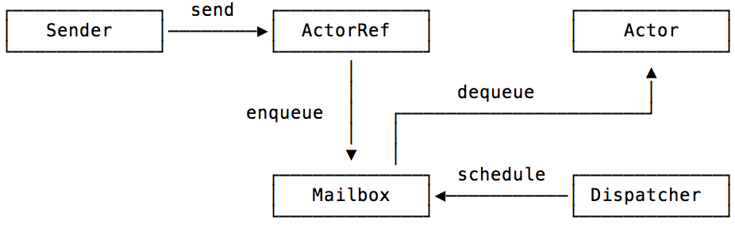

class: center, middle # AKKA --- # Agenda 1. What is Akka 2. Why Akka 3. code examples - Hello World - actor hierachy - fault tolerance - scale out --- # What is Akka #### 정의 > ** scale in/out ** (concurrency, remoting), ** fault-tolerant ** 를 구현해주는 ** toolkit **( not framework ) #### 주요 개념 - Actors - Fault tolerance(let it crash) - Location Transparency - Persistence --- # Actor - 1973 논문 발표 "A Universal Modular Actor Formalism for Artificial Intelligence" - 1986 Erlang [링크](https://namu.wiki/w/Erlang#s-2) 99.9999999%의 작동률!! - 2006 Scala Actor [wiki](https://en.wikipedia.org/wiki/Akka_(toolkit)) - 2010 akka [wiki](https://en.wikipedia.org/wiki/Akka_(toolkit)) - 2011 Elixir [참고 - Actors and Threads](http://www.slideshare.net/mperham/actors-and-threads/45-Thank_You_Questions_mperham_httpmikeperhamcomhttpblogcarbonvecom) [참고 - 액터모델 설명](http://www.brianstorti.com/the-actor-model/) [참고 - LINE LIVE 채팅 기능의 기반이 되는 아키텍처](http://developers.linecorp.com/blog/ko/?p=290) 300~400 byte의 가벼운 동시성을 지원하기위해 만들어진 객체(Thread는 512K에서 2MB까지 사용) > 1G jvm 기준 - actor는 1666666 생성(light weight) - thread는 1000 생성 > 액터는 가볍기 때문 대한 오버헤드가 적어 런타임에 생성/재시작/제거등 다양하게 액터를 제어할 수 있다.  <br> <div style="text-align: right; font-size: 15px;">dispatcher -> ( Thread 제공 )-> mailbox -> actor ->( Thread 반납 )</div> --- #### 칼휴이트(1973) 액터의 동작 정의 - 메시지를 수신한다 - 메시지를 송신한다 - 다른 액터를 만든다 #### 아카의 패러다임 - message driven : 객체의 메서드를 직접 호출할 수 없고, 오직 메세지를 전달할 수 있을 뿐이다. - asynchronous : 모든것이 비동기적이다. - nonblocking : 블록킹이 일어나면 안된다. - concurrency : 모든것이 동시적이다. --- # Reatvie manifesto [링크](http://www.reactivemanifesto.org/) - Responsive : 반응성 (자극에 즉각적인 반응) - Resilient : 유연성 (fault-tolerant) - Elastic : 탄력성 (scalability) - Message Driven : 메세지 중심 (asynchronous, location transparency) --- # Why Akka #### good use-case for akka > Investment and Merchant Banking, Retail, Social Media, Simulation, Gaming and Betting, Automobile and Traffic Systems, Health Care, Data Analytics <br> #### project using by akka > spark, play, Redis client.... <br> #### service using by akka > [case studies & stories - lightbend](https://www.lightbend.com/resources/case-studies-and-stories) --- # Why Akka <font size="1"> 내가 아카를 처음 사용한 것은 2013년 봄이었다. 모건스탠리에서 헤지펀드를 비 롯한 클라이언트들에게 투자기술을 제공하는 부서에서 근무하던 때였다. 수백 개 의 헤지펀드 중에서 어느 펀드가 갑자기 거래를 중단하는 일이 발생하면 그들이 맡겨놓은 돈을 돌려주기 위한 자금을 어떻게 충당할 것인가를 미리 예측하는 프로 그램이 있었다. 2008년 금융 위기 이후에 미국 정부는 모든 은행에게 이러한 계 산을 수행한 결과를 매일 제출하도록 요구했다. 정부가 요구하는 리포트를 만들기 위해서 프로그램은 다양한 방식으로 펀드를 선 택했다. 일정한 규칙에 따라서 1개, 10개, 100개 등 여러 펀드를 선택해 그들이 당장 거래를 중단했을 때 (혹은 파산했을 때) 그것이 은행의 자금사정에 어떤 영향을 끼치는지를 정밀하게 분석해서 계산했다. 한 번 계산하고 마는 것이 아니라 선택 된 모형마다 시나리오를 1,000,000번씩 실행해 정규분포를 만들어내는 몬테카 를로 프로그램이었다. 누군가 자바를 이용해 만들어놓은 이 프로그램은 자바 스레드와 Executor Service를 이용하는 방식으로 작성되어 있었다. 한 번 동작을 시작하면 결과를 내놓기까지 대략 <font color="red" size="2">6시간</font>이 걸렸다. 시간을 단축할 필요가 있었다. 비즈니스 요구사 항에 따라서 다양한 시나리오를 적용해보고 싶은데 시간이 장애물이었기 때문이 다. 이런 경우에 가장 손쉽게 떠올릴 수 있는 방법은 계산해야 하는 시나리오를 분 할해 여러 대의 컴퓨터에 분산되어 있는 프로그램에 할당하는 것이다. 하지만 프로그램이 스케일 업scale-up은 가능해도 스케일 아웃scale-out은 가능하지 않은 방식으로 작성된 게 문제였다. 스케일 업은 컴퓨터에 CPU와 메모리를 추가 해서 성능을 높이는 방식을 의미하고, 스케일 아웃은 별도의 컴퓨터를 추가해 병 렬처리를 수행하는 것을 의미한다. 아무튼, 프로그램의 실행속도를 줄이기 위해 자원을 추가하는 것이 상식적인 접근방법인데, 그렇게 투입된 자원을 소프트웨어 자체가 제대로 활용하지 않으면 가망이 없다. 당시는 금융 위기 이후 회복세를 타기 시작한 월스트리트에 헤지펀드의 수가 빠르 게 늘어나는 시점이었기 때문에 더 늦기 전에 프로그램을 대폭으로 리팩토링하기 로 결정했다. 이때 염두에 둔 요구사항은 다음과 같다. <br> <br> ● 컴퓨터 1대 위에서 돌아가는 속도가 6시간보다 빠를 것 <br> ● 컴퓨터를 추가해 병렬처리가 가능하게 할 것 <br> ● 동작하는 방식이 이해하기 편하고 새로운 시나리오 추가가 쉽도록 코드를 만들 것 <br> <br> 개념을 중심으로 정리하면 첫째는 일반적인 처리율throughput에 대한 것이고, 둘째 는 스케일 아웃에 대한 것이며, 셋째는 코드의 모듈화modularity에 대한 것이다. 이 러한 세 가지 요구사항을 충족시키기 위해서 나는 아카를 선택했다. </font> --- 처리율(throughput) <font size="1"> 아카를 이용한 리팩토링을 끝마쳤을 때, 똑같은 컴퓨터 위에서 전과 동일한 몬테 카를로 시나리오를 수행하는데 걸리는 시간이 <font color="red" size="2">6시간에서 2시간으로 단축</font>되었다. 66%의 시간이 절약된 것이다. 결과를 확인한 사람들은 깜짝 놀랐다. 단순히 자바 스레드에서 아카로 라이브러리를 바꾸었을 뿐인데 그렇게 엄청난 차이가 있을 수 있냐며 고개를 갸웃거렸다. 물론 이런 차이를 일반화할 수는 없다. 이런 결과 하나를 가지고 아카가 자바 스레 드보다 3배 빠르다고 말하는 어리석은 사람은 없을 것이다. 아카도 내부적으로 자바 스레드를 사용하기 때문에 그런 비교 자체가 성립하지 않는다. 하지만 일반적 인 차원에서 짚고 넘어갈만한 부분도 있다. 이렇게 커다란 차이가 어디에서 비롯 되었는지 이해하려면 우선 암달의 법칙Amdahl’s law을 생각해볼 필요가 있다. 암달의 법칙은 이렇다. “멀티코어를 사용하는 프로그램의 속도는 프로그램 내부에 존재하는 순차적sequential 부분이 사용하는 시간에 의해서 제한된다.” Thread나 Task를 만들어서 ExecutorService에게 제출하는 식으로 동시성 코드를 작성하면 여러 개의 스레드가 동시에 작업을 수행한다. 하지만 프로그램 안에는 Thread나 Task가 포함하지 않는 코드가 존재한다. 여러 개의 스레드가 동시에 작업을 수행하더라도 synchronized 블록이나 데이터베이스, 네트워크 API 호출등을만날때다른스레드와나란히줄을서서순차적으로작업을수행 해야 하는 경우도 있다. 암달의 법칙은 프로그램이 낼 수 있는 속도의 상한이 이런 순차적 코드가 사용하는 시간에 의해서 제한된다고 말하는 것이다. 이러한 순차적 코드의 또 다른 이름은 블로킹blocking 콜이다. 문제는 스레드 자체 가 아니라 스레드를 사용하면서 자기도 모르게 만들어내는 블로킹 콜이다. 조금 과장해서 말하자면 자바 개발자가 스레드를 이용해서 만들어내는 ‘동시성’ 코드는 일종의 신기루다. 사실은 코드 곳곳에 존재하는 블로킹 콜, 순차적 코드 때문에 전 체적인 프로그램의 처리율은 이미 상한이 정해져 있지만 여러 개의 스레드가 ‘동 시에’ 동작한다는 사실로부터 위안을 받을 뿐이다. 아카 내부에 숨겨진 마법 같은 것은 없다. 아카는 스칼라 언어로 작성되었지만 더 아래로 내려가면 자바의 동시성 패키지를 사용하기 때문에 아카를 사용하는 것은 궁극적으로 자바의 Thread나 Task를 사용하는 것과 마찬가지다. 하지만 아카를 사용하면 프로그램 곳곳에 존재하는 순차적 부분, 블로킹 콜을 전부 없애거나 적 어도 최소한으로 만드는 것이 가능해진다. 6시간이 2시간으로 줄어드는 ‘마법’은 여기에서 비롯된 것이다. 아카는 물리적으로 가벼운 라이브러리지만, 어떤 의미에서는 하나의 패러다임이 다. 블로킹blocking 혹은 동기적synchronous 방식의 프로그래밍에 익숙한 우리의 사고 방식을 난블로킹non-blocking 혹은 비동기적asynchronous 방식으로 탈바꿈시킨다는 점 에서 패러다임 전환을 요구한다. 아카를 이용해서 프로그램을 설계한다는 것은 블 로킹 호출이 일어나는 지점을 난블로킹 호출로 전환하는 작업을 수행하는 것을 의 미한다. 그렇기 때문에 암달의 법칙에서 이야기하는 순차적 부분이 차지하는 면적 이 최소한으로 줄어들게 되고, 프로그램의 전체적인 처리율은 그와 반비례해서 급 등하게 된다. 이런 이야기가 아직 구체적으로 감이 잡히지 않아도 걱정할 필요는 없다. 이 책에 담긴 예제코드를 공부하고 아카를 이용한 실전코드를 작성해보면 금방 이해가 될 것이다. 다만 블로킹/동기적 호출은 낡은 방식이고, 난블로킹/비동기적 호출은 현 대적 방식이라는 점은 기억할 필요가 있다. 그게 핵심이다. 그리하여 낡은 방식을 고집할 것인가 아니면 현대적 방식을 받아들일 것인가는 결국 자신의 선택임을 잘 생각해보기 바란다. <p> <span style="float:right">출처 - 아카시작하기 (임백준)</span> </font> ... 스케일아웃, 모듈화 부분 생략. --- # prepared - JDK 1.6~ - maven - IDE --- # Example #### HelloWorld - Pingpong > 아카 최초 예제 #### Goal - Actor를 생성하는 방법을 살펴본다. - Actor 동작 방법을 살펴본다. - 프로그램의 기대 동작 1. PingActor가 "start" 메세지를 수신 후 "ping"" 메세지를 PongActor에게 전달 1. PongActor는 "ping" 메세지를 수신 후 PingActor에게 "pong" 전달 1. PingActor가 "pong" 메세지를 수신 후 "ping"" 메세지를 PongActor에게 전달 --- # Example #### Akka Hierachy